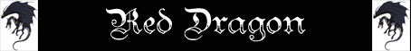

| Categoria di Età | Hatchling | Very Young | Young | Juvenile | Young Adult | Adult |
| Ambiente/Habitat | Montagne e Colline | Montagne e Colline | Montagne e Colline | Montagne e Colline | Montagne e Colline | Montagne e Colline |
| Frequenza | Molto Rara | Molto Rara | Molto Rara | Molto Rara | Molto Rara | Molto Rara |
| Organizzazione | Solitary | Solitary | Solitary | Solitary | Solitary | Solitary |
| Periodo di Attività | Qualsiasi | Qualsiasi | Qualsiasi | Qualsiasi | Qualsiasi | Qualsiasi |
| Dieta | Carnivora | Carnivora | Carnivora | Carnivora | Carnivora | Carnivora |
| Intelligenza | Exceptionally int. (16) | Exceptionally int. (16) | Exceptionally int. (16) | Exceptionally int. (16) | Exceptionally int. (16) | Exceptionally int. (16) |
| Punti Combattimento | 29 Punti Combattimento | 13 Punti Combattimento | 15 Punti Combattimento | 17 Punti Combattimento | 18 Punti Combattimento | 19 Punti Combattimento |
| Tesoro | Vedi Sotto | Vedi Sotto | Vedi Sotto | Vedi Sotto | Vedi Sotto | Vedi Sotto |
| Allineamento Dominante | Caotico Malvagio | Caotico Malvagio | Caotico Malvagio | Caotico Malvagio | Caotico Malvagio | Caotico Malvagio |
| Numero di Apparizione | 1 | 1 | 1 | 1 | 1 | 1 |
| Classe Armatura | 0 [10 base, -10 corazza] | -1 [10 base, -11 corazza] | -2 [10 base, -12 corazza] | -3 [10 base, -13 corazza] | -4 [10 base, -14 corazza] | -5 [10 base, -15 corazza] |
| Movimento | 6
esagoni Volare 10 esagoni |
6
esagoni Volare 12 esagoni |
6
esagoni Volare 14 esagoni |
6
esagoni Volare 16 esagoni |
6
esagoni Volare 16 esagoni |
6
esagoni Volare 16 esagoni |
| Dadi Vita | 9 | 11 | 13 | 15 | 16 | 17 |
| Thac0 | 11 | 9 | 7 | 6 | 5 | 4 |
| Numero di Attacchi | Artiglio * 2/Morso | Artiglio * 2/Morso | Artiglio * 2/Morso | Artiglio * 2/Morso | Artiglio * 2/Morso | Artiglio * 2/Morso |
| Danni | 1d6+1 (Taglio)
* 2 2d6+1 (Taglio) |
1d8+2 (Taglio)
* 2 2d10+2 (Taglio) |
1d10+3 (Taglio)
* 2 3d10+3 (Taglio) |
1d10+4 (Taglio)
* 2 3d10+4 (Taglio) |
1d10+5 (Taglio)
* 2 3d10+5 (Taglio) |
1d10+6 (Taglio)
* 2 3d10+6 (Taglio) |
| Poteri Offensivi | Istinto
Predatorio; Soffio (Red Dragon); |
Istinto
Predatorio; Soffio (Red Dragon); Capacità Magiche; |
Istinto
Predatorio; Soffio (Red Dragon); Capacità Magiche; |
Istinto
Predatorio; Soffio (Red Dragon); Capacità Magiche; |
Istinto
Predatorio; Soffio (Red Dragon); Capacità Magiche; |
Istinto
Predatorio; Soffio (Red Dragon); Capacità Magiche; |
| Poteri Difensivi | Immunità al Fuoco; | Immunità al Fuoco; | Immunità al Fuoco; |
Immunità al Fuoco; Dragon Fear; |
Immunità al Fuoco; Dragon Fear; |
Immunità al Fuoco; Dragon Fear; |
| Poteri Generici | Nessuna; | Nessuna; | Nessuna; | Nessuna; | Nessuna; | Nessuna; |
| Vulnerabilità | Nessuna; | Nessuna; | Nessuna; | Nessuna; | Nessuna; | Nessuna; |
| Resistenza alla Magia | 10% | 15% | 20% | 25% | 30% | 33% |
| Sensi | Vista Acuta, Senso Totale | Vista Acuta, Senso Totale | Vista Acuta, Senso Totale | Vista Acuta, Senso Totale | Vista Acuta, Senso Totale | Vista Acuta, Senso Totale |
| Dimensioni | Large (3,50 m. lungo) | Huge (6 m. lungo) | Huge (9 m. lungo) | Gargant. (12 m. lungo) | Gargant. (15 m. lungo) | Gargant. (18 m. lungo) |
| Morale | Fanatic (17) | Fanatic (17) | Fanatic (17) | Fanatic (17) | Fanatic (17) | Fanatic (17) |
| Valore in Punti Esperienza | 3788 | 8492 | 15359 | 26710 | 35112 | 44297 |
|
TIRI SALVEZZA DELLA CREATURA [Hatchling] |
|||||||
| CORAGGIO | ENERGIA VITALE | MAGIA | MALATTIA | MENTE | RIFLESSI | ROBUSTEZZA | VELENO |
| 0 | 0 | +5% | 0 | +5% | 0 | 0 | 0 |
| 39 | 44 | 49 | 37 | 47 | 46 | 41 | 34 |
|
TIRI SALVEZZA DELLA CREATURA [Very Young] |
|||||||
| CORAGGIO | ENERGIA VITALE | MAGIA | MALATTIA | MENTE | RIFLESSI | ROBUSTEZZA | VELENO |
| 0 | 0 | +5% | 0 | +5% | 0 | 0 | 0 |
| 35 | 38 | 46 | 34 | 44 | 46 | 34 | 26 |
|
TIRI SALVEZZA DELLA CREATURA [Young] |
|||||||
| CORAGGIO | ENERGIA VITALE | MAGIA | MALATTIA | MENTE | RIFLESSI | ROBUSTEZZA | VELENO |
| 0 | 0 | +5% | 0 | +5% | 0 | 0 | 0 |
| 32 | 35 | 44 | 31 | 42 | 42 | 31 | 23 |
|
TIRI SALVEZZA DELLA CREATURA [Juvenile] |
|||||||
| CORAGGIO | ENERGIA VITALE | MAGIA | MALATTIA | MENTE | RIFLESSI | ROBUSTEZZA | VELENO |
| 0 | 0 | +5% | 0 | +5% | 0 | 0 | 0 |
| 29 | 30 | 41 | 27 | 39 | 44 | 23 | 9 |
|
TIRI SALVEZZA DELLA CREATURA [Young Adult] |
|||||||
| CORAGGIO | ENERGIA VITALE | MAGIA | MALATTIA | MENTE | RIFLESSI | ROBUSTEZZA | VELENO |
| 0 | 0 | +5% | 0 | +5% | 0 | 0 | 0 |
| 29 | 30 | 41 | 27 | 39 | 44 | 23 | 9 |
|
TIRI SALVEZZA DELLA CREATURA [Adult] |
|||||||
| CORAGGIO | ENERGIA VITALE | MAGIA | MALATTIA | MENTE | RIFLESSI | ROBUSTEZZA | VELENO |
| 0 | 0 | +5% | 0 | +5% | 0 | 0 | 0 |
| 25 | 26 | 38 | 24 | 36 | 41 | 19 | 6 |
Descrizione
X.
Combat
Poiché i draghi
rossi sono molto sicuri di sé, raramente si soffermano a valutare un avversario
. Non appena vedono un bersaglio decidono sul momento se attaccare, facendo uso
di una delle tante strategie preparate in precedenza. Se incontrano creature che
ritengono deboli, i draghi rossi, specialmente dall'età di Juvenile in poi,
atterrano attaccando con morsi e artigli, preferendo all'uso del soffio di fuoco
qualche incantesimo per evitare di distruggere l'eventuale tesoro che le vittime
possano avere con loro.
ISTINTO
PREDATORIO
(Moderate Special Ability):
La creatura
possiede un forte istinto predatorio, per tale motivo costei riceve un
bonus costante di +1 alla Thac0
con i suoi attacchi.
SOFFIO DEL DRAGO ROSSO: Questa creatura può soffiare un soffio di fuoco sui propri nemici. Si tratta di un'azione complessa avente fattore iniziativa dipendente dalla categoria di età del drago. Quando la creatura effettua questo soffio, un cono di fiamme la cui dimensione cambia a seconda della categoria di età del drago parte dalla sua testa e colpisce tutti coloro si trovano sulla sua traiettoria. Il getto, infatti, non è fermato dalla presenza di ostacoli, anche fissi, di dimensioni limitate (si pensi a rami od arbusti, mobilio ecc...) né dalla presenza di altre creature. Chi è colpito dal getto acido subisce un ammontare di danni da fuoco magico che varia a seconda della categoria di età del drago. In ogni caso alla vittima è concesso un tiro salvezza su riflessi per dimezzare il danno subito. Una volta utilizzata questa abilità speciale la creatura non può utilizzarla nuovamente nei due round di combattimento immediatamente successivi. In ogni caso, la creatura non potrà utilizzare questa abilità speciale per più di tre volte nell'arco di una medesima giornata.

| Categoria di Età | Fattore Iniziativa | Danno del Soffio | Dimensioni del Soffio | Tipo di Potere Speciale |
| 1 Hatchling | +2 | 2d10+1 (fuoco) | Soffio Piccolo | Moderate Special Ability |
| 2 Very Young | +2 | 4d10+2 (fuoco) | Soffio Piccolo | Moderate Special Ability |
| 3 Young | +2 | 6d10+3 (fuoco) | Soffio Piccolo | Superior Special Ability |
| 4 Juvenile | +4 | 8d10+4 (fuoco) | Soffio Medio | Powerful Special Ability |
| 5 Young Adult | +4 | 10d10+5 (fuoco) | Soffio Medio | Powerful Special Ability |
| 6 Adult | +4 | 12d10+6 (fuoco) | Soffio Medio | Powerful Special Ability |
| 7 Mature Adult | +4 | 14d10+7 (fuoco) | Soffio Medio | Powerful Special Ability |
| 8 Old | +4 | 16d10+8 (fuoco) | Soffio Medio | Powerful Special Ability |
| 9 Very Old | +6 | 18d10+9 (fuoco) | Soffio Grande | Extraordinary Special Ability |
| 10 Venerable | +6 | 20d10+10 (fuoco) | Soffio Grande | Extraordinary Special Ability |
| 11 Wyrm | +6 | 22d10+11 (fuoco) | Soffio Grande | Extraordinary Special Ability |
| 12 Great Wyrm | +6 | 24d10+12 (fuoco) | Soffio Grande | Extraordinary Special Ability |
CAPACITA' MAGICHE (Typical Ability): I draghi possono lanciare alcune volte al giorno alcuni incantesimi in relazione alla loro categoria di età. Tutti gli incantesimi lanciati dai draghi si considerano avere solo componente vocale. Per lanciare questi incantesimi, infatti, il drago non necessita dell'utilizzo di componenti materiali o somatici. In particolare, il drago potrà, di volta in volta, selezionare liberamente le magie da lanciare dalla lista a disposizione della sua specie potendo utilizzarle un numero di volte totali al giorno come indicato nella seguente tabella (per gli incantesimi clericali il Drago potrà scegliere qualsiasi magia dalla lista generale e speciale del livello di potere concesso ai chierici della divinità specificata nella tabella). Allo stesso modo tutte le magie si considereranno lanciate al livello di lancio indicato in corrispondenza della categoria di età del drago.
| Categoria di Età | Livello di Lancio |
Maghi I Livello di Potere |
Maghi II Livello di Potere |
Maghi III Livello di Potere |
Maghi IV Livello di Potere |
Chierici - Azatàr I Livello di Potere |
Chierici - Azatàr II Livello di Potere |
| 1 Hatchling | Nessuno | Nessuno | Nessuno | Nessuno | Nessuno | Nessuno | Nessuno |
| 2 Very Young | 7° livello | 1 al giorno | Nessuno | Nessuno | Nessuno | Nessuno | Nessuno |
| 3 Young | 8° livello | 1 al giorno | Nessuno | Nessuno | Nessuno | 1 al giorno | Nessuno |
| 4 Juvenile | 9° livello | 1 al giorno | 1 al giorno | Nessuno | Nessuno | 1 al giorno | Nessuno |
| 5 Young Adult | 10° livello | 2 al giorno | 1 al giorno | Nessuno | Nessuno | 1 al giorno | 1 al giorno |
| 6 Adult | 11° livello | 2 al giorno | 1 al giorno | 1 al giorno | Nessuno | 2 al giorno | 1 al giorno |
| 7 Mature Adult | 12° livello | 2 al giorno | 2 al giorno | 1 al giorno | Nessuno | 2 al giorno | 1 al giorno |
| 8 Old | 13° livello | 3 al giorno | 2 al giorno | 1 al giorno | 1 al giorno | 2 al giorno | 2 al giorno |
| 9 Very Old | 14° livello | 3 al giorno | 2 al giorno | 2 al giorno | 1 al giorno | 3 al giorno | 2 al giorno |
| 10 Venerable | 15° livello | 3 al giorno | 3 al giorno | 2 al giorno | 1 al giorno | 3 al giorno | 2 al giorno |
| 11 Wyrm | 16° livello | 4 al giorno | 3 al giorno | 2 al giorno | 2 al giorno | 3 al giorno | 3 al giorno |
| 12 Great Wyrm | 17° livello | 4 al giorno | 3 al giorno | 3 al giorno | 2 al giorno | 4 al giorno | 3 al giorno |
MAGHI - I LIVELLO DI POTERE
Globes of Fire (Evocation, Fire)
Range: 6 metri + 3 metri
per livello oltre il primo (max. 30 metri al 9°)
Components: V, S
Duration: Instantaneous
Casting Time: 2
Area of
Effect: One or more creatures
Saving Throw: Negates
Dalle mani del mago parte un globo fiammeggiante ogni due livelli di lancio (1 globo al 1° e 2° livello, 2 globi al 3° e 4° livello, ecc…) fino ad un massimo di 5 globi al 9° livello di lancio. Questi globi infuocati possono essere diritte contro qualsiasi bersaglio si trovi nell’arco di vista frontale del mago. Ogni creatura potrà effettuare un tiro salvezza su riflessi per ogni singola sfera al fine di evitarla. Ogni sfera che non sarà stata evitata provocherà alla vittima 1d6+1 danni da fuoco magico.
Heat Mist (Evocation, Smoke)
Range: 21
metri
Components: V, S, M
Duration: 3 rounds + 1 round ogni 2 livelli oltre il primo
Casting Time: 4
Area of Effect: 5 sfere da 3 metri di diametro + una sfera per livello
Saving Throw: None
Quando il mago lancia questo incantesimo una nube di fumo ardente si espande nell'area d'effetto. L'area dall'incantesimo corrisponde ad un numero di sfere (esagoni) di 3 metri di diametro corrispondenti al livello di lancio della magia più cinque. Il mago può disporre queste aree a piacimento purché siano disposte senza soluzione di continuità tra di loro e siano tutte allo stesso livello di altezza dal suolo (non potendosi disporre una sull'altra). Tutte le creature che si trovano, alla fine di ogni round di durata della magia, all'interno dell'area d'effetto subiranno 3 danni da calore ustionandosi per il prolungato contatto con il fumo rovente. Un vento forte od effetti magici assimilabili fanno terminare immediatamente l'incantesimo. Il componente materiale di questo incantesimi sono sali da bagno dal peso di 1/5 di libbra e dal costo di 5 g.p. che si consumano al lancio della magia.
MAGHI - II LIVELLO DI POTERE
Improved Globes of Fire
(Evocation, Fire)
Range: 6 metri + 3 metri per livello oltre il primo (max. 30 metri al 9°)
Components: V, S
Duration: Instantaneous
Casting Time: 3
Area of Effect: One or more creatures
Saving Throw: Negates
Dalle mani del mago parte un globo fiammeggiante ogni due livelli di lancio (1 globo al 1° e 2° livello, 2 globi al 3° e 4° livello, ecc…) fino ad un massimo di 6 globi all'11° livello di lancio. Questi globi infuocati possono essere diritte contro qualsiasi bersaglio si trovi nell’arco di vista frontale del mago. Ogni creatura potrà effettuare un tiro salvezza su riflessi per ogni singola sfera al fine di evitarla. Ogni sfera che non sarà stata evitata provocherà alla vittima 1d8+2 danni da fuoco magico.
Fire Blast
(Evocation, Fire)
Range: 0
Components: V, S
Duration: Istantanea
Casting Time: 3
Area of Effect: Speciale
Saving Throw: Speciale
Quando il mago lancia questo incantesimo un'esplosione particolarmente dirompente di fuoco si verifica intorno allo stesso in esclusivamente in direzione esterna. Tutte le creature presenti in qualsiasi posizione adiacente (in corpo a corpo) a quella occupata dal mago saranno investite dall'esplosione subendo 5 danni da fuoco + 1 danno ogni due livelli di lancio (5 danni al 1° livello, 6 danni al 2° e 3° livello, 7 danni al 4° e 5° livello, e così via) fino ad un massimo di 10 danni al 10° livello di lancio. Si noti che le creature che per la loro size occupano più di una casella subiranno comunque una volta sola tale danno. Oltre a subire tali danni le vittime di questa magia dovranno superare un tiro salvezza contro raggio della morte con penalità di -1 per non cadere a terra knockdown. Le creature di taglia Large e quelle che poggiano su quattro o più zampe effettueranno il tiro salvezza con un bonus di +1 (modificatore già comprensivo della precedente penalità). Le creature di taglia Huge o superiore nonché le creature striscianti non subiranno, in alcun caso, il secondo effetto della magia.
MAGHI - III LIVELLO DI POTERE
Range:
21 m. + 3 metri / 2 livelli > 5°
Components: V, S, M
Duration: Istantanea
Casting Time: 4
Area of Effect: Sfera di 15 metri di diametro
Saving Throw: ½
Attraverso l'uso di questa magia il mago scaglia un palla di fuoco in una posizione entro il raggio d'azione dell'incantesimo (21 metri al 5° e 6° livello, 24 metri al 7° ed 8° livello, e così via...). La sfera infuocata, dunque, esplode nella posizione indicata coinvolgendo un'area sferica di 9 metri di diametro centrata nel punto d'impatto. Nell'area d'effetto divamperanno fiammate tali che tutte le creature presenti nella stessa subiranno 1d6 danni da fuoco magico per livello di lancio della magia, fino ad un massimo di 10d6 danni al 10° livello di lancio. Le creature potranno dimezzare i danni subiti superando un tiro salvezza su riflessi. Il boato dell'esplosione, inoltre, è tale da poter stordire leggermente le creature presenti nelle vicinanze. Tutte le creature che si trovano entro 6 metri dal luogo della detonazione dovranno, quindi, superare anche un tiro salvezza su robustezza e tale tiro salvezza dovrà essere superato anche dalle creature che si trovano da 9 a 15 metri di distanza dal punto d'impatto. Quest'ultime creature, però, otterranno un bonus del +10% a tale tiro salvezza. Se tale tiro salvezza fallisce le creature saranno incapacitate per 1d2 round. Si noti che creature non aventi un corpo organico di tipo animale dotato di organi uditivi non subiranno gli effetti secondari di questa magia. Creature dotate di una particolare resistenza ai danni sonori riceveranno la medesima percentuale di resistenza come immunità agli effetti secondari di tali danni. Per lo stesso motivo, creature dotate di una particolare vulnerabilità ai danni sonori riceveranno la medesima percentuale come possibilità di fallimento automatico di tale tiro salvezza. Si osservi che, nei luoghi chiusi, il raggio d'azione dell'effetto secondario sarà incrementato di 3 metri per fascia e tutte le creature riceveranno una penalità di -5% al tiro salvezza su robustezza. Il componente materiale di questo incantesimo è una piccola sfera di guano di pipistrello misto a zolfo dal peso di 0,1 libbra e dal costo di 6 monete d'oro che si consuma al lancio della magia.
Range: 12
yards + 3 yard per level > 5°
Components: V, S, M
Duration: 1 round per level (max. 9)
Casting Time: 1 round
Area of Effect: Special
Saving Throw: ½
Con questo incantesimo il mago evoca una colonna vorticosa di fuoco larga 1,5
metri ed alta fino a 3 metri. La colonna può apparire ad una distanza di 12
metri + 3 metri ogni livello di lancio oltre il 5° (15 metri al 6° livello, 18
metri al 7° livello) fino ad un massimo di 24 metri al 9° livello. Chiunque
entra in contatto con la colonna di fuoco subisce 1d4 danni da fuoco per livello
di lancio della magia (fino ad un massimo di 9d4 al 9° livello di lancio)
dimezzabili con un tiro salvezza contro incantesimi. Concentrandosi il mago può
spostare la colonna di fuoco che avanza muovendosi per 3 metri al round. La
colonna si muoverà ad un fattore iniziativa pari a +6 (il mago dunque deve, per
impartire l'ordine di movimento alla colonna, rimanere concentrato fino a che la
colonna non si sia mossa, se perde la concentrazione precedentemente l'ordine
non si considererà impartito). A meno che nell'ordine di movimento impartito nel
round il mago non stabilisca che la colonna si fermi o che la colonna si muova
di tre metri e poi si fermi, la colonna di fuoco procede automaticamente nella
direzione verso la quale era stata mossa l'ultima volta dal mago. Il mago può
impartire un primo ordine di movimento già durante il lancio della magia. In tal
caso la colonna si sposterà nel round successivo a quello di lancio. Si noti che
la colonna di fuoco deve rimanere obbligatoriamente su una superficie solida o
svanire nel nulla. La magia terminerà una volta trascorsi un round per livello
di lancio della stessa fino ad un massimo di 9 rounds. Le fiamme del vortice
bruciano facilmente oggetti combustibili presenti nell'area nella quale il
vortice si muove, i quali dovranno immediatamente effettuare un tiro salvezza
per non prendere fuoco. Oggetti di materiali non combustibili dovranno
effettuare il tiro salvezza solo a partire dal secondo round di permanenza nel
vortice. L'esposizione prolungata alle fiamme del vortice dona un malus al tiro
salvezza degli oggetti presenti nell'area pari a -1 cumulativo per round
ulteriore al primo in cui hanno effettuato il tiro salvezza. Gli oggetti
posseduti dalle creature, invece, effettueranno tiri salvezza solo qualora il
loro possessore fallirà un tiro salvezza. Il componente materiale di questo
incantesimo è una fiaschetta di olio silveriano che si consuma al lancio della
magia.
DRAGON FEAR [Da Juvenile] : I draghi possono essere creature terrificanti. La loro forza ed il loro potenziale distruttivo sono in grado di terrorizzare anche i più esperti avversari. Quando un drago raggiunge una certa età (nella normalità dei casi quella di Juvenile) la sua mera vista può incutere terrore. Tutti coloro che si avvicinano ad una distanza pari od inferiore a quella indicata nella tabella (raggio di azione che aumenta con l'avanzamento di categoria di età del drago variando da 18 a 54 metri) da un drago che possiede questa capacità, infatti, devono superare un tiro salvezza su coraggio per non restare terrorizzati. Si tratta di un tiro salvezza non modificato dalla differenza di livello tra la vittima ed il drago. Questo tiro salvezza, però, subisce dei modificatori in base all'età del drago come indicato nella tabella dell'età. Se il tiro salvezza riesce la vittima non subirà alcun effetto e non dovrà effettuare alcun altro tiro salvezza per la vista del medesimo drago nelle seguenti 24 ore. Se il tiro salvezza fallisce la creatura sarà colta da un profondo senso di terrore e riceverà una penalità di -2 ai tiri per colpire ed il 20% di fallire nella concentrazione fino a che resterà entro una distanza dal drago pari al raggio di efficacia dell'aura di paura. La creatura avrà diritto a superare un nuovo tiro salvezza per la vista del medesimo drago solo una volta trascorse 24 ore dal fallimento del precedente tiro salvezza. Le creature immuni alla paura e le creature aventi livelli o dadi vita almeno pari a quelli del drago sono immuni agli effetti di questa abilità speciale.
| Categoria di Età | Età in anni | Classe Armatura | Dadi Vita | Bonus al Danno | Dragon Fear | Dragon Fear Radius | Dragon Fear
Ability Class |
| 1 Hatchling | 0-5 | +3 | -6 | +1 | None | None | None |
| 2 Very Young | 6-15 | +2 | -4 | +2 | None | None | None |
| 3 Young | 16-25 | +1 | -2 | +3 | None | None | None |
| 4 Juvenile | 26-50 | base | base | +4 | +12% | 18 metri | Moderate Special Ability |
| 5 Young Adult | 51-100 | -1 | +1 | +5 | +9% | 21 metri | Moderate Special Ability |
| 6 Adult | 101-200 | -2 | +2 | +6 | +6% | 24 metri | Moderate Special Ability |
| 7 Mature Adult | 201-400 | -3 | +3 | +7 | +3% | 27 metri | Superior Special Ability |
| 8 Old | 401-600 | -4 | +4 | +8 | 0 | 30 metri | Superior Special Ability |
| 9 Very Old | 601-800 | -5 | +5 | +9 | -3% | 36 metri | Superior Special Ability |
| 10 Venerable | 801-1000 | -6 | +6 | +10 | -6% | 42 metri | Powerful Special Ability |
| 11 Wyrm | 1001-1200 | -7 | +7 | +11 | -9% | 48 metri | Powerful Special Ability |
| 12 Great Wyrm | 1200+ | -8 | +8 | +12 | -12% | 54 metri | Powerful Special Ability |
IMMUNITA' AI PROIETTILI [Da Old] (Superior Special Ability) : Il corpo della creatura è resistente all'impatto con i comuni proiettili utilizzati dalle armi da fuoco e da tiro che si limiteranno a rimbalzare sul corpo della creatura. Proiettili incantati con incantamenti generali della scuola di incantamento almeno pari a+1 ed in ogni caso proiettili di grosse dimensioni (colpi di catapulta, balista, massi lanciati dai giganti) avranno comune effetto sul corpo della creatura.
IMMUNITA' AL FUOCO ED AL CALORE (Typical Ability): Il corpo della creatura è completamente resistente ai danni da fuoco e da calore, per tale motivo la stessa non subirà alcun danno da fuoco e da calore sia esso di origine magica che naturale.
Habitat/Society
I draghi rossi sono i più avidi tra
tutti i draghi, e cercano senza sosta di incrementare il loro tesoro. Sono
straordinariamente presuntuosi, cosa che si riflette nel loro portamento
altezzoso e nell'espressione sdegnosa. I draghi rossi costruiscono le loro tane
in profonde caverne che, si estendono nel sottosuolo, scintillano al calore dei
loro corpi e si riconoscono per l'odore di fumo e zolfo. In ogni caso, nelle
vicinanze c'è sempre una posizione elevata dalla quale sorvegliano con boria il
loro territorio, che secondo loro consiste in tutto quanto è visibile. Questa
postazione a volte ricade nei territori dei draghi d'argento, ed è per questa
ragione che questi ultimi e i draghi rossi sono spesso nemici. I draghi rossi
sono carnivori per scelta, e il loro cibo preferito è la carne di giovani umani
o semi-umani. A volte convincono gli abitanti di un villaggio a sacrificare
regolarmente delle fanciulli per saziare la loro gola.
Ecology
Le piccole scaglie dei cuccioli di drago rosso sono di un lucente color scarlatto, e rendono facile l'individuazione del drago per predatori e cacciatori; per tale motivo questi draghi rimangono nel sottosuolo e non si avventurano all'esterno fino a quando non sono capaci di cavarsela da soli. Verso la fine della gioventù, le scaglie mutano in un rosso cupo, e la lucentezza viene rimpiazzata da un aspetto liscio e opaco. Con l'età, le scaglie del drago diventano più grandi, spesse e resistenti come il metallo. Le increspature del collo e delle ali sono blu cenere o grigio-viola verso le estremità, e si scuriscono col passare degli anni. Le pupille del drago rosso tendono a svanire con l'età ; i draghi rossi più vecchi hanno occhi che sembrano sfere di lava fusa.
Mystical Resource Sourge
(Corna) Quantità: 5, Presenza 10%+ 2% * Categoria - Scuola di Magia:
Enchantment
- Qualità della Risorsa:
Uncommon.
Mystical Resource Sourge
(Ghiandola Fuoco) Quantità: 1, Presenza 50% - Effetto Particolare:
Fuoco
- Qualità della Risorsa:
Uncommon
(Cat. 1-3), Rare
(Cat. 4-9),
Exotic (Cat. 10+).
Mystical Resource Sourge
(Lingua) Quantità: 1, Presenza 10% * Categoria (max 95%) - Scuola di Magia:
Enchantment
- Qualità della Risorsa:
Rare.
Mystical Resource Sourge
(Cuore di Drago) Quantità: 1, Presenza 8% * Categoria (max 95%) - Scuola di
Magia:
Enchantment
- Qualità della Risorsa:
Exotic.
| Hatchling / Very Young / Young | ||
| Tipologia di Tesoro | % di Ritrovamento | Quantità |
| Gemme |
25% /30% /40% |
2d8 gemme |
| Oggetti Preziosi | 25% /30% /40% | 1d12: (1-5) 1 oggetto (6-9) 2 oggetti (10-12) 3 oggetti |
| Oggetti Comuni | 30% /35% /43% | 1 oggetto comune |
| Armi | 25% /30% /35% | 1 arma |
| Armature | 25% /30% /35% | 1 corazza |
| Oggetto Magico | 15% /25%, 20% /30%, 25% | 1 oggetto magico 1d10: (1-7) common (8-10) rare |
| Monete di platino | 15% /20% /25% | 4d20+2d10 monete di platino |
| Monete d'oro | 20% /25% /35% | 1d10-1*200 +1d100 monete d'oro |
| Monete d'argento | 25% /30% /43% | 3d10*200 +1d100 monete d'argento |
| Monete di rame | 30% /30% /43% | 2d10+1d10*200 +1d100 monete di rame |
| Juvenile / Young Adult / Adult | ||
| Tipologia di Tesoro | % di Ritrovamento | Quantità |
| Gemme |
40%, 30%, 20% /45%, 40%, 35% /50%, 45%, 40% |
2d10 gemme |
| Oggetti Preziosi | 40%, 30% /45%, 40% /50%, 45% | 1d3 oggetti |
| Oggetti Comuni | 50% /55% /60% | 1d3 oggetti comuni |
| Armi | 40% /45% /50% | 1d2 armi |
| Armature | 40% /45% /50% | 1d2 corazze |
| Oggetto Magico | 40%, 35%, 30%, 25% /50%, 45%, 40%, 35% /55%, 50%, 45%, 40% | 1 oggetto magico 1d10: (1-6) common (7-10) rare |
| Monete di platino | 40%, 30% /45%, 40%, 35% /50%, 45%, 40% | 1d6*100+1d20 monete di platino |
| Monete d'oro | 43%, 32%, 21% /50%, 45%, 40% /55%, 50%, 45% | 5d10*200 +1d100 monete d'oro |
| Monete d'argento | 60%, 43% /60%, 50% /60%, 60% | 1d10*2000 +1d1000 monete d'argento |